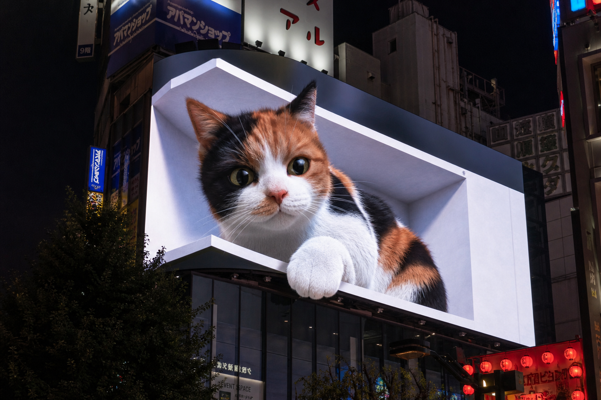

DSC680 — Bellevue University
The Art & Science of Anamorphic 3D Billboards
Colorful Canvas Project — Exploring the illusion of depth on L-shaped LED screens
Our Target: Real-time Three.js recreation of this effect
Colorful Canvas Project — Exploring the illusion of depth on L-shaped LED screens
Anamorphic 3D billboards trick the eye into perceiving depth on flat LED screens using forced perspective and L-shaped screen geometry. These viral installations inspired our project.

A massive ocean wave crashes inside an LED corner screen atop the COEX building. The realistic water simulation stunned millions worldwide and ignited the anamorphic billboard trend.

A giant calico cat peers out from an L-shaped screen in Tokyo's Shinjuku district. It meows, stretches, and naps — captivating passersby with its playful realism and frame-breaking motion.
A vibrant juice bottle explodes with fruit, splashes, and droplets that appear to break free of the screen. Built entirely in the browser using Three.js and WebGL with real-time rendering.
The 3D illusion relies on three key technical elements: screen geometry, forced perspective from a fixed viewpoint, and layered depth composition.
Two LED panels meet at a 90-degree corner, forming an “L” shape. The front panel is the main canvas; the narrower side panel adds peripheral depth. The corner edge where they meet becomes the “frame” the 3D content appears to break out of.
The illusion is rendered for one specific camera position — the “sweet spot.” From this angle, the perspective projection on both panels perfectly aligns, and the flat screens vanish into a seamless 3D scene. Move away, and the trick becomes visible.
Content is composed in three distinct depth zones. The background sits behind the screen plane, the midground aligns with it, and the foreground “breaks out” in front — creating the illusion that objects are escaping the frame into the real world.
From 3D scene creation to the final post-processed output, every frame passes through a carefully designed rendering pipeline.
Model the hero object, fruits, splashes, and environment in a Three.js scene graph with PBR materials.
Position the perspective camera at the sweet spot. Configure oblique projection to match the L-shaped screen corners.
Render the scene twice into off-screen targets — once for the front panel and once for the side panel — using clipping planes.
Composite background, midground, and foreground elements. Clipping planes enforce which content stays “inside” vs. “outside” the screen.
Apply Unreal Bloom, ACES tonemapping, and a vignette pass for cinematic polish. Output at display resolution.
Six rules that separate compelling anamorphic content from gimmicky effects.
One hero object dominates the frame. Clutter kills the illusion — keep the composition focused on a single, recognizable subject.
Objects must touch, overlap, or break the bezel edge. This boundary crossing is what triggers the viewer’s depth perception.
Design for one viewing angle. The entire perspective projection is calibrated for a single camera position, optimized for street-level pedestrians.
Separate content into background, midground, and foreground zones. Each layer has a distinct visual role in building the spatial illusion.
Black edges blend seamlessly with the physical screen frame, erasing the boundary between digital content and real-world hardware.
Slow, purposeful animation sells the illusion. Rapid movement breaks the spatial trick — gentle drift and subtle rotation feel natural.
A browser-native, real-time anamorphic 3D billboard built entirely with web technologies — no plugins, no downloads.
The scene runs entirely in the browser at 60 fps using Three.js r168. A PBR material pipeline with environment mapping gives the juice bottle photorealistic glass and liquid rendering.